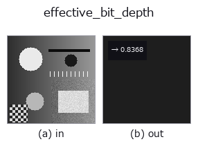

features op• Datenarten: image → feature
• Aufruf: fullseye.apply(img, "effective_bit_depth", a=0.5, b=0.5) (das 2-D-Modell ist ein Bild plus zwei skalare Regler a,b∈[0,1])

*Die Abbildung ist die tatsächliche Ausgabe auf einer synthetischen 128×128-Eingabe. Links Eingabe, rechts Ausgabe. Punktwolken als Draufsicht-Streudiagramm (Helligkeit = z), 1-D-Reihen als Linie, Volumen als Maximum-Projektion entlang z, Videos als mittleres Bild, komplexe Bilder als Betrag; Rückgabewerte, die kein Bild ergeben, werden als Werte gezeigt.*
*Regler a ändert die Ausgabe nicht (gemessen: identisch bei 0,1 / 0,5 / 0,9).*
*Regler b ändert die Ausgabe nicht (gemessen: identisch bei 0,1 / 0,5 / 0,9).*
Schätzt die Anzahl der Bits, die das Bild tatsächlich nutzt, und gibt sie auf [0,1] abgebildet zurück (feature).
Auch in einem 8-Bit-Behälter steckt häufig nur Inhalt im Wert von 6 Bit - ein gestreckter Low-Bit-Sensor, ein Durchgang durch JPEG, eine angewandte Gamma-Kurve und so weiter. Hier wird die effektive Bitzahl aus dem tatsächlichen Abstand der belegten Graustufen geschätzt:
Die vorkommenden Pixelwerte werden sortiert, der Modus der Differenzen benachbarter Werte gilt als Schrittweite Δ, und bits = log2(1 + 1/Δ). Der Rückgabewert ist bits / 16 (a/b werden nicht verwendet).
Anwendungsbedingungen und Abweichungen: (1) ★Die Pixelanzahl setzt die Obergrenze. Sind die Graustufen fast kontinuierlich (Bilder, die in Gleitkomma verarbeitet wurden), ist der kleinste Schritt "der mittlere Abstand ~1/N bei N Werten", daher erreicht die Schätzung nahe log2(N) eine Sättigung - an einem kontinuierlichen 128x128-Bild (N=16384) gemessen 13.7 bit. Sie sättigt nicht bei 16, daher die Linie "darüber nicht messbar" vorab aus der Pixelanzahl ziehen (Messen an einem kleinen Ausschnitt liefert zu niedrige Werte). (2) Nach einer nichtlinearen Transformation (Gamma, Logarithmus) ist die Schrittweite ortsabhängig, daher ist der Modus "eine repräsentative Schrittweite", keine einheitliche.
(3) Bei geditherten Bildern werden die Graustufen aufgefüllt, daher fällt die effektive Bitzahl hoch aus -
das beantwortet "wie viele Stufen verwendet werden", nicht "wie viele Bit Information vorhanden sind".
• Leitfaden zur Familie gallery2d_features
• Katalog der Beispieldaten (Download-URLs / Lizenzen) — 2-D nutzt skimage.data (BSD/Public Domain) plus synthetische Bilder, 3-D nennt Download-URLs echter Datenquellen (Stanford, PDS, …).
• Herkunft und Literatur der Operatoren — die Quellen der Forschung/Verfahren, auf denen diese Operatorfamilie beruht.
• Der kanonische Algorithmus (Autor, Jahr) und seine Anwendungen stehen im Familienleitfaden oben.
Das Programm unten ist nachweislich lauffähig (gleiche Eingabe wie die Abbildung). In der Studio-Hilfe wird dieser Block zu Schaltflächen, die es sofort laden und ausführen.
effective_bit_depth 0.50 0.50
▸ Diese Pipeline laden · Laden & ausführen
• gallery2d_features — py -3.11 examples/gallery2d_features.py
feature als Eingabe)features)blob_count · area_frac · count_contours · total_length · vol_count · sk_euler · sk_entropy_feat · sk_blur_effect
*Provenance: ops.py — 2D Operator-Registry. Diese Notiz wird von tools/opdocs.py md erzeugt (nicht von Hand bearbeiten).*
© 2026 Kazufumi Furuse — Fullseye operator documentation. Licensed under Apache-2.0.